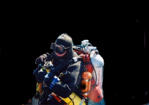

TDI Trimix Instructor #CI24
All levels of Technical diving including:Nitrox, Advanced Nitrox,
Decompression Procedures, Extended Range, Trimix, and Nitrox, Mixed Gas and
service technician.
Although Jonathan spends a lot of his time travelling he is always available
to schedule training courses and a lot of fun diving. Jonathan runs an
annual trip to the Andria Doria every summer plus in the winter months he
runs trips to North Florida for those interested in Cave Diving and
Technical diver training programs. Jonathan can be reached either by e-mail
or telephone anytime to answer any questions you might have regarding
training and diving.